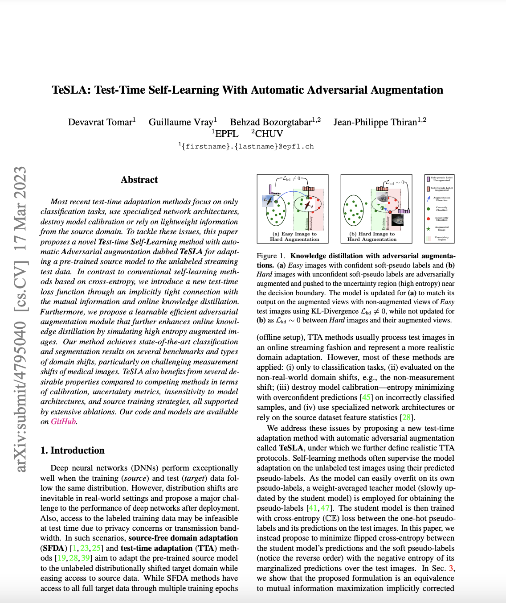

Abstract
Most recent test-time adaptation methods focus on only classification tasks, use specialized network architectures, destroy model calibration or rely on lightweight information from the source domain. To tackle these issues, this paper proposes a novel Test-time Self-Learning method with automatic Adversarial augmentation dubbed TeSLA for adapting a pre-trained source model to the unlabeled streaming test data. In contrast to conventional self-learning methods based on cross-entropy, we introduce a new test-time loss function through an implicitly tight connection with the mutual information and online knowledge distillation. Furthermore, we propose a learnable efficient adversarial augmentation module that further enhances online knowledge distillation by simulating high entropy augmented images. Our method achieves state-of-the-art classification and segmentation results on several benchmarks and types of domain shifts, particularly on challenging measurement shifts of medical images. TeSLA also benefits from several desirable properties compared to competing methods in terms of calibration, uncertainty metrics, insensitivity to model architectures, and source training strategies, all supported by extensive ablations.
TeSLA Overview
Below, we illustrate an overview of the TeSLA pipeline for adapting a pre-trained source model to the unlabeled streaming
test data. We introduce the concept of flipped cross-entropy (f-ℂ𝔼) loss for test-time training through the tight connection with the mutual information between the model's predictions and the test images.
Using this equivalence, we derive our test-time loss function that implicitly incorporates teacher-student knowledge distillation. Subsequently, we propose to enhance the test-time teacher-student knowledge distillation by utilizing the consistency of the student model's predictions on the proposed adversarial augmentations with their corresponding refined soft-pseudo labels from the teacher model. We refine the soft-pseudo labels by averaging the teacher model's predictions on (1) weakly augmented test images; (2) nearest neighbors in the feature space. Furthermore, we propose an efficient online algorithm for learning adversarial augmentations.
(a) The student model fs is adapted on the test images by minimizing the proposed test-time objective ℒpl. The high-quality soft-pseudo labels required by ℒpl are obtained from the exponentially weighted averaged teacher model ft and refined using the proposed Soft-Pseudo Label Refinement (PLR) on the corresponding test images. The soft-pseudo labels are further utilized for teacher-student knowledge distillation via ℒkd on the adversarially augmented views of the test images. (b) The adversarial augmentations are obtained by applying learned sub-policies sampled i.i.d from ℙ using the probability distribution P with their corresponding magnitudes selected from M. The parameters M and P of the augmentation module are updated by the unbiased gradient estimator of the proposed loss ℒAug computed on the augmented test images.
TeSLA Results
We evaluate and compare TeSLA against state-of-the-art (SOTA) test-time adaptation algorithms for both classification and segmentation tasks under three types of test-time distribution shifts resulting from (1) common image corruption, (2) synthetic to real data transfer, and (3) measurement shifts on medical images. The latter is characterized by a change in medical imaging systems, e.g., different scanners across hospitals or various staining techniques.
Try our code
We released PyTorch code and models of the TeSLA for your use.
Paper
|  |
D. Tomar, G. Vray, B. Bozorgtabar, J.P. Thiran
TeSLA: Test-Time Self-Learning With Automatic Adversarial Augmentation.
In CVPR, 2023.
ArXiv
|
BibTeX
@inproceedings{tomar2023TeSLA,
title={TeSLA: Test-Time Self-Learning With Automatic Adversarial Augmentation},
author={Tomar, Devavrat and Vray, Guillaume and Bozorgtabar, Behzad and Thiran, Jean-Philippe},
booktitle={Proceedings of the IEEE/CVF conference on computer vision and pattern recognition (CVPR)},
year={2023}
}
Acknowledgements
We thank Taesung Park for his project page template.
|